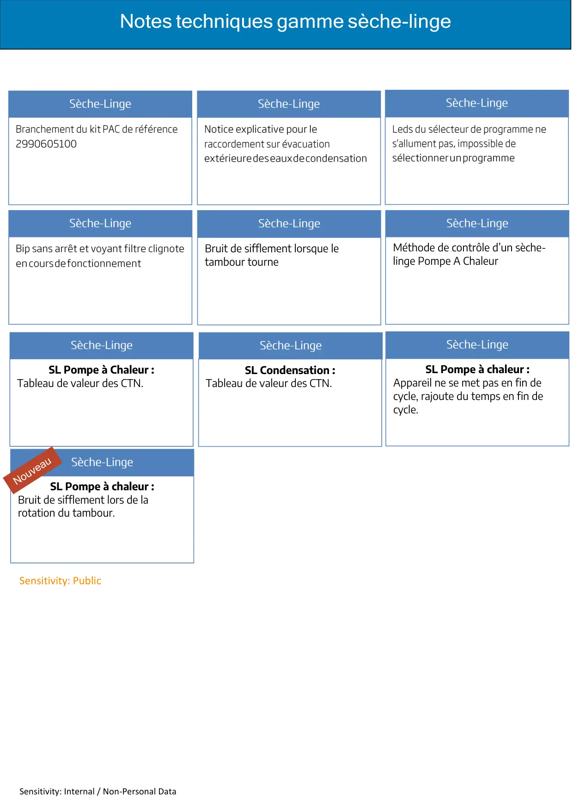

Sensitivity: Internal / Non-Personal DataNotes techniques gamme sèche-lingeSensitivity: PublicBruit de sifflement lorsque letambour tourneMéthode de contrôle d’un sèche-linge Pompe A ChaleurSL Pompe à Chaleur :Tableau de valeur des CTN.SL Condensation :Tableau de valeur des CTN.SL Pompe à chaleur :Appareil ne se met pas en fin decycle, rajoute du temps en fin decycle.SL Pompe à chaleur :Bruit de sifflement lors de larotation du tambour.
1 / 1Liens de ce document (10)
PDFBranchement nouveau groupe PAC1 p.PDFMise en place tuyau évacuation1 p.PDFInversion fil sur connecteur2 p.PDFNouveau filtre porte-feuille2 p.PDFFeutrine arbre moteur bruyante2 p.PDFContrôle seche linge PAC8 p.PDFValeurs sondes seche linge condensation1 p.PDFNote Technique seche linge PAC Ne se met pas en fin de cycle1 p.PDFNote Technique seche linge PAC Bruit De Sifflement1 p.PDFValeurs sonde seche linge PAC1 p.